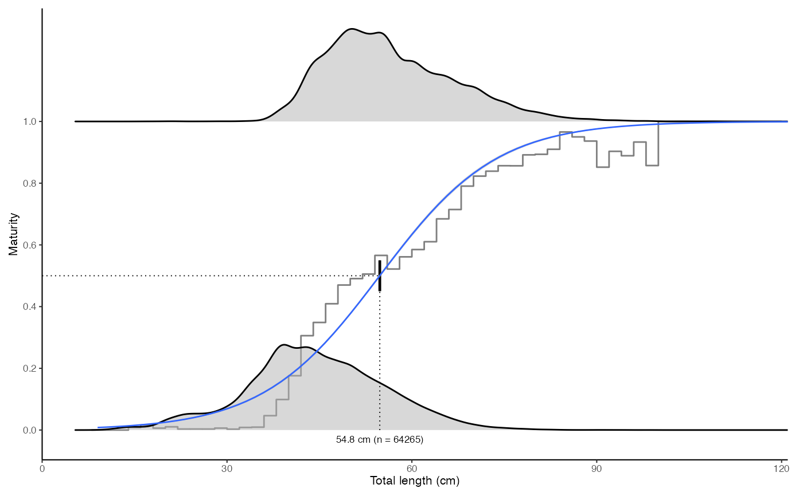
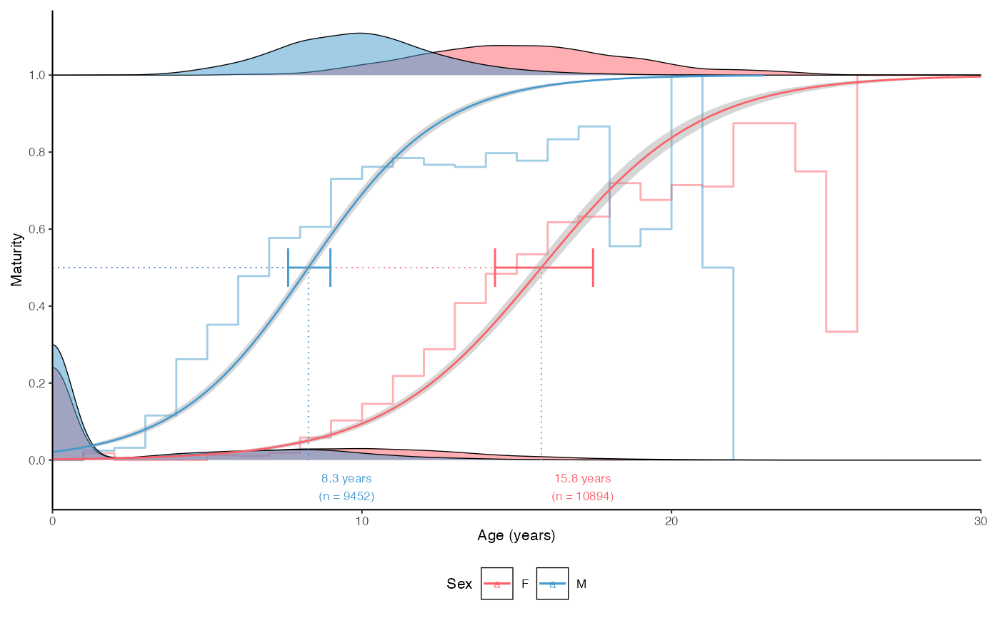
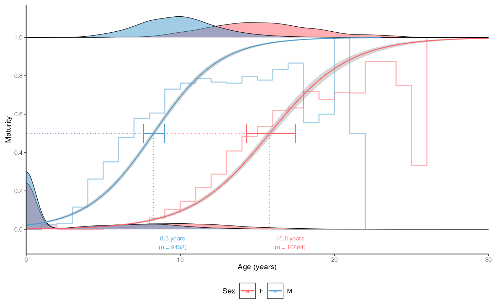

Plots an estimate of length or age at 50% mature for a dataset
Usage
plot_maturity(
dt,
length = "length",
maturity = "maturity",
sex = "sex",
split.by.sex = FALSE,
female.sex = "F",
male.sex = "M",
length.unit = "cm",
length.bin.width = 2,
bootstrap.n = NA,
force.zero.group.length = NA,
force.zero.group.strength = NA,
force.zero.group.n = NA,
force.zero.group.cv = 0,
xlab = "Total length",
base_size = 8,
legend.position = "bottom",
...
)Arguments
- dt
A data.frame, tibble or data.table
- length
Character argument giving the name of the length (or age) column in
dt- maturity
Character argument giving the name of the maturity column in
dt. Should be either logical (TRUE == mature, FALSE == immature) or integer (1 == mature, 0 == immature).- sex
Character argument giving the name of the sex column in
dt. Ignored ifsplit.by.sex == FALSE.- split.by.sex
Logical indicating whether the result should be split by sex.
- female.sex, male.sex
A character or integer denoting female and male sex in the
sexcolumn ofdt, respectively.- length.unit
A character argument giving the unit of
length. Will be used in the labels of the figure.- length.bin.width
Numeric specifying the increment (delta length) by which length data should be binned to calculate maturity proportions. Use
NULLto remove from the plot.- bootstrap.n
Integer defining the number of bootstrap replicates to be used to calculate 95% confidence intervals for the mean 50% mature estimate. If
NA(default), the confidence intervals are calculated from the glm object without boostrapping. See Details.- force.zero.group.length
Numeric indicating the length to which 0-group (all immatures) should be forced. Use
NAignore the forcing.- force.zero.group.strength
Numeric indicating how many percent of total fish should be added to the specified
force.zero.group.length. Cannot be used simultaneously withforce.zero.group.n- force.zero.group.n
Numeric indicating how many observations should be added to the specified
force.zero.group.length. Ifsplit.by.sex = TRUE, use a named vector of length two with names referring tofemale.sexandmale.sex. Cannot be used simultaneously withforce.zero.group.strength- force.zero.group.cv
Numeric indicating the coefficient of variation for the forced 0-group (all immature) length. Resulting lengths will be randomly generated from a normal distribution.
- xlab
Character giving the x-axis label without unit
- base_size
Base size parameter for ggplot. See ggtheme.
- legend.position
Position of the ggplot legend as a character. See ggtheme.
- ...
Additional arguments passed to geom_density_ridges.
Details
The 95% confidence intervals for the mean 50% mature estimate are calculated using the glm function by default. This routine might not be optimal when zero group fish are added. Hence, the function contains an option to bootstrap confidence intervals using the same number of data than observations (i.e. excluding the added data from the number of randomly resampled rows). Adding an integer to the bootstrap.n argument turns on this feature. Note that the confidence intervals calculated this way tend to be narrower than the glm() confidence intervals.
Examples
# Simple L50 plot
data(survey_ghl)
plot_maturity(survey_ghl, length = "length", maturity = "maturity")
#> Warning: Ignoring unknown parameters: `size`
#> $plot
#> Picking joint bandwidth of 1.21
#>
#> $text
#> [1] "50% maturity at length (L50) based on logit regressions:\n54.784 cm. 95% confidence intervals: 52.852 - 56.787\n Number of specimens: 64265.\n Confidence intervals estimated from the glm object."
#>
#> $params
#> mean ci.min ci.max sex intercept slope n
#> 1 54.78361 52.85249 56.787 both -5.755492 0.1050587 64265
#>
# \donttest{
# Bootstrapped CIs are narrower than the glm ones
plot_maturity(survey_ghl, bootstrap.n = 10)
#> Warning: Ignoring unknown parameters: `size`
#> $plot
#> Picking joint bandwidth of 1.21

#>
#> $text
#> [1] "50% maturity at length (L50) based on logit regressions:\n54.793 cm. 95% confidence intervals: 54.706 - 54.884\n Number of specimens: 64265\n\n Confidence intervals estimated using 10 bootstrap replicates."
#>
#> $params
#> mean ci.min ci.max sex intercept slope n
#> 1 54.79348 54.70635 54.8836 both -5.755492 0.1050587 64265
#>
# A50 plot, split by sex
plot_maturity(survey_ghl, length = "age", length.unit = "years",
xlab = "Age", length.bin.width = 1, split.by.sex = TRUE)$plot
#> Picking joint bandwidth of 0.602
 # Add juveniles
plot_maturity(survey_ghl, length = "age", length.unit = "years",
xlab = "Age", length.bin.width = 1, split.by.sex = TRUE,
force.zero.group.length = 0,
force.zero.group.strength = 100)$plot
#> Picking joint bandwidth of 0.638

# }
# Add juveniles
plot_maturity(survey_ghl, length = "age", length.unit = "years",
xlab = "Age", length.bin.width = 1, split.by.sex = TRUE,
force.zero.group.length = 0,
force.zero.group.strength = 100)$plot
#> Picking joint bandwidth of 0.638

# }